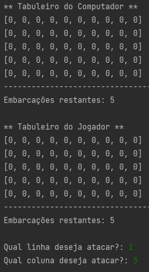
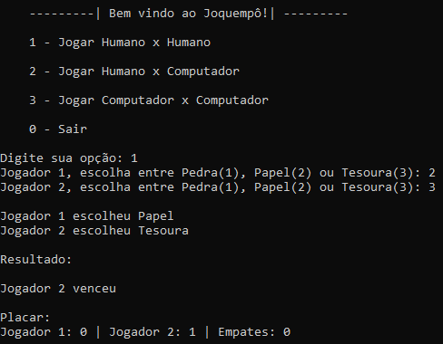

Jogo da Forca


Nesse trabalho criamos um programa em Python que implemente o jogo da forca. Utilizei vetores para representar a palavra
secreta,
onde cada elemento do vetor representa uma letra da palavra e um loop "for" para percorrer o vetor da palavra secreta e
verificar
se as letras informadas pelo jogador estão presentes.
Batalha Naval

No jogo do Batalha Naval implementamos por meio da linguagem Python o jogo original. Batalha Naval é um jogo de
tabuleiro de lápis e papel do qual participam dois jogadores. O objetivo do jogo é afundar a tropa de navios do inimigo.
Inicialmente é definido um tabuleiro (matriz) de 5x10, os tabuleiros não são visíveis para os jogadores. Antes de
iniciar o jogo, os jogadores posicionam a sua frota em seu tabuleiro, sem revelar ao adversário tal posicionamento.
As jogadas são feitas de forma alternada. Quando da sua vez, o jogador “atira” em uma posição do tabuleiro
do aversário indicando suas coordenadas (linha e coluna). O jogo deve então informar se o tiro acertou algo ou não.
Se o jogador acertou algo, então a embarcação foi afundada. Ganha o jogo quem afundar primeiro a frota do aversário.
Jogo do Joquempô

Nessa atividade, eu junto com a minha equipe desenvolvemos um jogo de Joquempô. É apresentado aos jogadores três opções:
pedra, papel ou tesoura. Caso seja escolhida a mesma opção é dado empate e o jogo funciona em loop